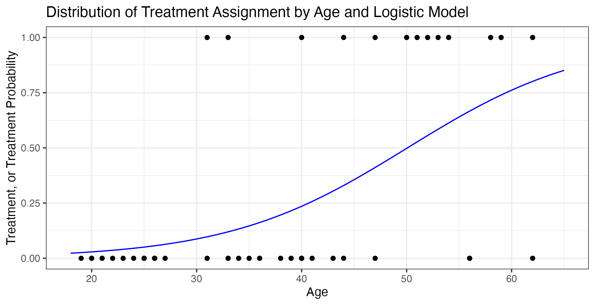
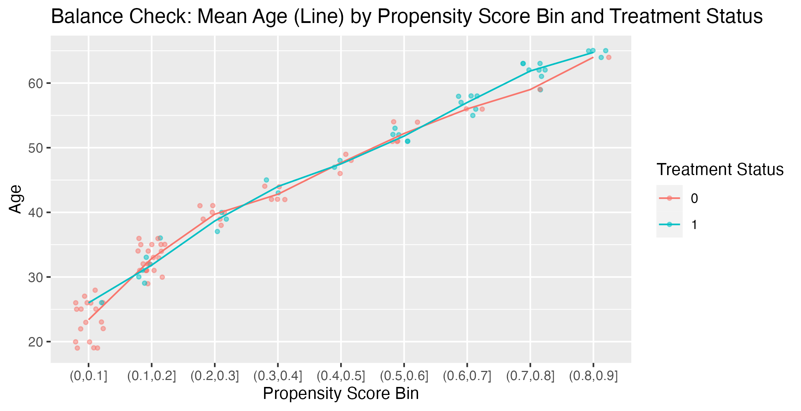
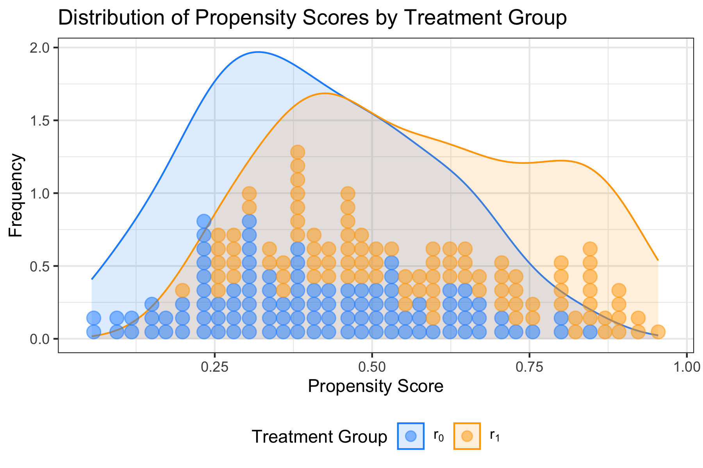
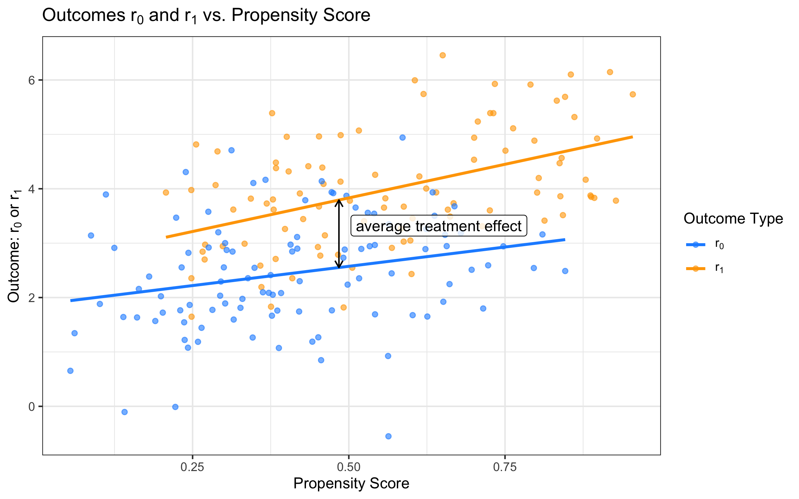

# Dependencies
library(tidyverse)
# Generate a data.frame of 100 folks with ages from 19-65
df <- data.frame(x = sample(x=seq(19,65), replace=TRUE, size = 100))
# Coefficients for our logistic model
beta_0 <- -5
beta_1 <- 0.1
# Compute the odds of treatment using a logistic function
df$e_x <- exp(beta_0 + beta_1 * df$x) / (1 + exp(beta_0 + beta_1 * df$x))
# Assign treatment group based on the computed odds
df$z <- rbinom(n = nrow(df), size = 1, prob = df$e_x)
# Fit a logistic regression model
model <- glm(z ~ x, data = df, family = binomial(link=logit))
# Report model estimates
coef(model)
# Predicted propensity scores
df$propensity_scores <- predict(model, type="response")
# We can confirm these match our intuition —
# This is just applying the logistic function 1/(1+exp(-x)) to the
# expanded terms from our regression model.
all.equal(df$propensity_scores, 1/(1+exp(-(coef(model)[1] + coef(model)[2]*df$x))))
# Plot our age-treatment relationship
ggplot(df, aes(x = x, y = z)) +
geom_jitter(width=0.25, height=0.025, alpha = 0.5) +
geom_line(data =
data.frame(x = seq(18,65,.1),
y = predict(model, newdata = data.frame(x = seq(18,65,.1)), type='response')),
aes(x = x, y = y),
color = 'blue') +
xlab("Age") +
ylab("Treatment, or Treatment Probability") +
ggtitle("Distribution of Treatment Assignment by Age and Logistic Model") +
theme_bw()
# Divide the data into bins based on the propensity score
df$e_bin <- cut(df$e_x, breaks = seq(0, 1, by = 0.1))
# Calculate the mean age by propensity score in
mean_x_by_bin <- df |> group_by(e_bin, z) |> summarize(x = mean(x))
# Show age by propensity score bins and treatment
ggplot(df, aes(x = e_bin, y = x, color = as.factor(z))) +
geom_jitter(width=.25, height = .05, alpha = 0.5, size = 1) +
geom_line(data = mean_x_by_bin, aes(group = z)) +
labs(title =
"Balance Check: Mean Age (Line) by Propensity Score Bin and Treatment Status"),
x = "Propensity Score Bin",
y = "Age",
color = "Treatment Status")The Central Role of Propensity Scores
Notes on The Central Role of the Propensity Score in Observational Studies for Causal Effects by Paul R. Rosenbaum and Donald B. Rubin (1983), Biometrika
https://doi.org/10.1093/biomet/70.1.41
Introduction
This paper introduces the reader to the propensity score and shows how, through large and small sample theory, that adjustment for the scalar propensity score is sufficient to remove bias due to the observed covariates.
The quantity of fundamental interest is the average treatment effect (presented in their notation):
\[\mathbb E(r_1) - \mathbb E(r_0),\] where \(r_1\) is the outcome under treatment and \(r_0\) is the outcome under no treatment.
They introduce balancing scores which are functions \(b(x)\) such that \[x \perp\!\!\!\perp z | b(x) \quad (\text{or equivalently} \quad z \perp\!\!\!\perp x | b(x)).\]
In other words, \(P(Z|X,b(X)) = P(Z|b(X))\).
We define the propensity score to be \[e(x) = Pr(Z=1|X = x)\] e.g., the probability of treatment given covariates}, is the propensity score or propensity towards treatment.
An Example
We might have a situation where age is correlated with assignment to the treatment mechanism.
Denoting \(X\) as age and \(Z\) as treatment, consider the following scenario where we set
\[X \sim \text{Uniform on } \mathbb N \cap \text{ the age range } [19,64]\] \[Z \sim \text{Bernoulli}(\underbrace{\text{logistic}(\underbrace{\beta_0 + \beta_1 \cdot X}_{\text{log odds}})}_{\text{probability scale}})\] \[ \text{where logistic}(x) = \frac{1}{1+e^{-x}} = \frac{e^x}{1+e^x}\]
It’s clear that \(X\) and \(Z\) will be dependent and correlated, but by stratifying on propensity scores estimated via a logistic regression model, we can empirically see an example of
how conditioning on propensity scores renders \(X\) and \(Z\) conditionally independent.


Theorem 1
\(e(X)\) is a balancing score. That is, \[X \perp\!\!\!\perp Z | e(X).\]
Proof. We want to show that \[Pr(Z = 1 | X, e(X)) = Pr(Z = 1 | e(X)).\]
Since \(e(x)\) is a function of \(x\), we have that \[Pr(Z = 1 | X, e(X)) = Pr(Z = 1 | X = X) = e(X).\]
What remains is to show that \(Pr(Z = 1 | e(X)) = e(X)\).
By the definition of probability and the law of iterated expectation, \[\begin{aligned} Pr(Z = 1 | e(X)) & = \mathbb E[Z = 1 | e(X)] \quad \text{ (by definition of probability) } \\ & = \mathbb E[\mathbb E(Z = 1|X) | e(X)] \quad (\star) \\ & = \mathbb E[ e(X) | e(X) ] \\ & = e(x) \quad \text{(by the law of iterated expectations)} \end{aligned}\]
The \((\star)\) step can be justified two ways, either rhetorically or more rigorously:
- Rhetorically: With respect to the inside term, we can apply extra conditioning by \(X = x\) since we’re going to compute the outer expectations conditioned on \(e(X)\) and thus across the \(X\) values that satisfy \(X = x \in e^{-1}(x)\).
- More rigorously: \[ \begin{aligned} \mathbb E[Z = 1 | e(X')] & = \mathbb E[Z = 1 | X \in e^{-1}(X')] \\ & = \frac{1}{Pr(X \in e^{-1}(X'))} \int z Pr(Z = 1, X \in e^{-1}(X')) dz \\ & = \frac{1}{Pr(X \in e^{-1}(X'))} \int z \int_{x \in e^{-1}(X')} Pr(Z = 1 | X = x) dx dz \\ & = \mathbb E[\mathbb E[Z = 1 | X ] | X \in e^{-1}(X')] \\ & = \mathbb E[\mathbb E[Z = 1 | X ] | e(X')] \\ & = \text{(continue from above)} \end{aligned}\]
\(\square\)
Theorem 2
Let \(b(x)\) be a function of \(x\). Then \(b(x)\) is a balancing score, that is \[x \perp\!\!\!\perp z | b(x)\] if and only if \(b(x)\) is finer than \(e(x)\) in the sense that \(e(x) = f(b(x))\) for some function \(f\).
Proof. (\(\leftarrow\)) First we show that if \(b(x)\) is finer than \(e(x)\) then it is a balancing score.
We want to show that \[ Pr(Z = 1 | X, b(X)) \stackrel{\text{claim}}{=} Pr(Z = 1 | b(X))\]
Since the left hand side is easily understood to be \(e(x)\) since \(b(X)\) is a function of \(X\), it is then sufficient to show that \[Pr(Z=1|b(x)) = e(x).\]
Now we rewrite the left-hand-side as follows: \[Pr(Z=1|b(x)) = \mathbb E[Z=1|b(X)] = \mathbb E[\mathbb E[Z=1|X]|b(X)] = \mathbb E[e(x)|b(x)].\]
The next step of Rosenbaum and Rubin’s is to claim that \[\mathbb E[e(X) | b(X) = b(x)] = e(x).\]
The most straightforward way to see this is to start by noting that if we fix \(X=x\), then any function of \(X\) as a random variable also becomes fixed, so that \(\mathbb E[f(X)|X=x] = f(x)\). In our case, we have that \(e(x) = f(b(x))\), so \(\mathbb E[e(x)|b(x)] = \mathbb E[f(b(X))|b(X)=b(x)] = f(b(x)) = e(x)\).
As a result, we’ve shown that \[\mathbb E[e(x)|b(x)] = Pr(Z = 1|b(x)) = e(x),\] which concludes this direction of the proof showing that if \(b(x)\) is finer than \(e(x)\) then it is a balancing score.
\[ \exists f \colon e(x) = f(b(x)) \Longrightarrow X \perp\!\!\!\perp Z | b(x).\]
(\(\rightarrow\)) Moving on, we now prove the converse direction by contradiction. Suppose that we have \(b(x)\), a balancing score such that \(X \perp\!\!\!\perp Z | b(x)\), but \(b(x)\) is not finer than \(e(x)\) so we have \(\exists x_1, x_2 \ni e(x_1) \neq e(x_2) \text{ and } b(x_1) = b(x_2)\).
We know by applying the definition of \(e(\cdot)\) that \[Pr(Z = 1 | X = x_1) \neq Pr(Z = 1 | X = x_2).\] However, if \(X \perp\!\!\!\perp Z | b(x)\), then we should have that
\[Pr(Z = 1 | X = x_1, b(x_1)) = Pr(Z=1 | b(x_1)), \quad \text{ and }\] \[Pr(Z = 1 | X = x_2, b(x_2)) = Pr(Z=1 | b(x_2)).\]
Since \(b(x_1) = b(x_2)\), we also then know that \[Pr(Z=1 | b(x_1)) = Pr(Z=1 | b(x_2)),\] but this would imply that \[e(x_1) = Pr(Z = 1 | X = x_1, b(x_1)) = Pr(Z = 1 | X = x_2, b(x_2)) = e(x_2),\] since \(Pr(Z|X,f(X)) = Pr(Z|X)\) for any function \(f\). This establishes a contradiction to our assumption that \(e(x_1) \neq e(x_2)\).
Thus if \(b(x)\) is a balancing function then it must be finer than \(e(x)\). \[X \perp\!\!\!\perp Z | b(x) \Longrightarrow e(x) = f(b(x)).\]
\(\square\)
Definition. We say that treatment assignment is strongly ignorable given a vector of covariates \(v\) if and only if \[(r_1,r_0) \perp\!\!\!\perp z | v, \quad 0 < Pr(Z=1|v) < 1.\]
Theorem 3
If treatment assignment is strongly ignorable given \(x\), then it is strongly ignorable given any balancing score \(b(x)\); that is, \[(r_1, r_0) \perp\!\!\!\perp Z | X\] and \[0 < Pr(Z=1 | X) < 1\] for all \(x\) imply \[(r_1, r_0) \perp\!\!\!\perp Z | b(X)\] and \[0 < Pr(Z = 1 | b(X)) < 1\] for all \(b(X)\).
Proof. It is clear that if \(0 < Pr(Z = 1|x) < 1\) for all values of \(x\), then there is no such value of \(x\) where conditioning on \(b(x)\) would push the quantity \(Pr(Z=1|b(x))\) outside the interval \((0,1)\).
What remains then is to show that \((r_1, r_0) \perp\!\!\!\perp z | b(x)\), or rewritten that \[Pr(Z=1 | r_1, r_0, b(x)) = Pr(Z=1 | b(x)),\] which, if we recall the proof to Theorem 2, we have shown \[ = e(x).\]
In order to show the claimed equality, we rewrite the probability of treatment given \(r_1, r_0,\) and \(b(x)\) as the expected value of \(Pr(Z=1 | r_1, r_0, X)\) conditioned on \(b(x)\). We then have, by the assumption that \((r_1, r_0) \perp\!\!\!\perp Z | X\),
\[\begin{aligned} Pr(Z = 1 | r_1, r_0, b(x)) & = \mathbb E[Pr(Z=1|r_1,r_0,X)|b(x)] \\ & = \mathbb E[Pr(Z=1|X)|b(x)] \\ & = \mathbb E[e(X)|b(x)] = e(x). \end{aligned}\]
\(\square\)
Theorem 4
Suppose treatment assignment is strongly ignorable and \(b(x)\) is a balancing score. Then the expected difference in observed responses to the two treatments at \(b(x)\) is equal to the average treatment effect at \(b(x)\), that is,
\[\mathbb E[r_1 | b(x), Z= 1] - \mathbb E[r_0 | b(x), Z= 0] = \mathbb E[r_1 - r_0 | b(x)].\]
Proof. If a randomly selected treated unit (\(Z = 1\)) is compared to a randomly selected control unit (\(Z = 0\)), the expected difference in outcome is \[\mathbb E[r_1 | Z = 1] - \mathbb E[r_0 | Z=0].\]
This expression does not equal \(\mathbb E[r_1] - \mathbb E[r_0]\) in general because we do not observe \(r_1\) for untreated units and vice-versa and instead only observe the conditional distribution of \(r_t\) given \(Z = t\).
We introduce a two-stage sampling procedure now, where first we sample a vector of covariates \(x\) and then sample both treated and control units that have covariates equal to \(x\). The expected difference is now \[\mathbb E_{x} [ E[r_1 | X=x, Z=1] - \mathbb E[r_0 | X=x, Z=0]],\] where \(\mathbb E_{x}\) denotes expectation with respect to the distribution of covariates \(X\). If treatment assignment is strongly ignorable, then the above is equal to \[ \mathbb E_x [E[r_1|x] - E[r_0|x]],\] which is the average treatment effect.
Now suppose we alter the two-stage sampling procedure to sample a value of \(b(x)\) instead of a vector of covariate levels. Given strongly ignorable treatment assignment, it follows from Theorem 3 that
\[\mathbb E[r_1 | b(x), Z = 1] - \mathbb E[r_0 | b(x), Z=0] = \mathbb E[r_1 | b(x)] - \mathbb E[r_0 | b(x)].\]
From this it follows that
\[\begin{aligned} \mathbb E_{b(x)} [ \mathbb E[r_1| b(x), Z=1] - \mathbb E[r_0 | b(x), Z = 0]] & = \mathbb E_{b(x)} [ \mathbb E[r_1 | b(x)] - \mathbb E[r_0 | b(x)]] \\ & = \mathbb E[r_1 - r_0]. \end{aligned}\]
To quote:
In words, under strongly ignorable treatment assignment, units with the same value of the balancing score \(b(x)\) but different treatments can act as controls for each other, in the sense that the expected difference in their responses equals the average treatment effect.
\(\square\)
Corollaries
Paraphrasing: These theorems provide a rigorous justification for the estimation of average treatment effects via either pair matching on balancing scores or by estimating those treatment effects within strata of equal (or similar) balancing scores.
Corollary 4.3. Covariance adjustment on balancing scores. Suppose treatment assignment is strongly ignorable, so that in particular \(\mathbb E[r_t|Z = t, b(x)] = \mathbb E[r_t|b(x)]\) for balancing score \(b(x)\). Further suppose that the conditional expectation of \(r_t\) given \(b(x)\) is linear: \[\mathbb E[r_t | Z=t,b(x)] = \alpha_t + \beta_t b(x) \quad (t=0,1).\] Then the estimator \[(\hat \alpha_1 - \hat \alpha_0) + (\hat \beta_1 - \hat \beta_0)b(x)\] is conditionally unbiased given \(b(x_i)\) for the treatment effect at \(b(x)\), namely \(\mathbb E[r_1-r_0|b(x)]\), if \(\hat \alpha_t\) and \(\hat \beta_t\) are conditionally unbiased estimators of \(\alpha_t\) and \(\beta_t\) such as least squares estimators. Moreover \[(\hat \alpha_1 - \hat \alpha_0) + (\hat \beta_1 - \hat \beta_0) \bar b,\] where \(\bar b = n^{-1} \sum b(x_i)\) is unbiased for the average treatment effect if the units in the study are a simple random sample from the population.
Corollary 4.3 feels particularly different from corollary 4.1 and 4.2 (which are only summarized above) to me in that the above simulation (to me) clearly demonstrates how pair-matching and stratification on balancing scores would work. However, the covariate adjustment proposed in corollary 4.3 feels like something else, so I thought having some simulation code to demonstrate it made sense.
# 1. Generate data
n <- 200
x <- rnorm(n)
b_x <- 1 / (1 + exp(-x)) # a simple logistic propensity score
# 2. Simulate treatment assignments
z <- rbinom(n, 1, b_x)
# 3. Simulate potential outcomes
alpha_0 <- 2
alpha_1 <- 3
beta_0 <- 1.5
beta_1 <- 2
r_0 <- alpha_0 + beta_0 * b_x + rnorm(n)
r_1 <- alpha_1 + beta_1 * b_x + rnorm(n)
# Observed outcomes
r <- z * r_1 + (1 - z) * r_0
df <- data.frame(b_x = b_x, z = z, r = r)
# 4. Use linear regression to estimate parameters
model_0 <- lm(r ~ b_x, data = df[z == 0,])
model_1 <- lm(r ~ b_x, data = df[z == 1,])
hat_alpha_0 <- coef(model_0)[1]
hat_alpha_1 <- coef(model_1)[1]
hat_beta_0 <- coef(model_0)[2]
hat_beta_1 <- coef(model_1)[2]
# 5. Compute the estimator
b_bar <- mean(b_x)
ATE_est <- (hat_alpha_1 - hat_alpha_0) + (hat_beta_1 - hat_beta_0) * b_bar
print(ATE_est)(Intercept)
1.330254 # 6. Compare to the true average treatment effect
true_ATE <- (alpha_1 - alpha_0) + (beta_1 - beta_0) * b_bar
print(true_ATE)[1] 1.228616# 7. Bootstrap to estimate SE of ATE_est
B <- 1000 # number of bootstrap samples
ATE_boot <- numeric(B)
for (i in 1:B) {
# Resample data with replacement
bootstrap_indices <- sample(1:n, n, replace = TRUE)
x_b <- x[bootstrap_indices]
z_b <- z[bootstrap_indices]
r_b <- r[bootstrap_indices]
b_x_b <- b_x[bootstrap_indices]
df <- data.frame(r_b = r_b, b_x_b = b_x_b, z_b = z_b)
# Use linear regression to estimate parameters for bootstrapped data
model_0_b <- lm(r_b ~ b_x_b, data = df[z_b == 0,])
model_1_b <- lm(r_b ~ b_x_b, data = df[z_b == 1,])
hat_alpha_0_b <- coef(model_0_b)[1]
hat_alpha_1_b <- coef(model_1_b)[1]
hat_beta_0_b <- coef(model_0_b)[2]
hat_beta_1_b <- coef(model_1_b)[2]
# Compute the estimator for bootstrapped data
b_bar_b <- mean(b_x_b)
ATE_boot[i] <- (hat_alpha_1_b - hat_alpha_0_b) + (hat_beta_1_b - hat_beta_0_b) * b_bar_b
}
# Standard error is the standard deviation of the bootstrapped estimates
SE_ATE_boot <- sd(ATE_boot)
mean_ATE_boot <- mean(ATE_boot)
print(SE_ATE_boot) # print standard error for bootstrap estimated ATE[1] 0.1704336print(mean_ATE_boot) # check bootstrap estimated ATE resembles above estimate[1] 1.326318# 9. Visualizations to Aid Intuition
ggplot(df, aes(x=b_x, fill=as.factor(z), color = as.factor(z))) +
geom_density(alpha = 0.15) +
geom_dotplot(
alpha = 0.5,
stackgroups = TRUE,
method = "dotdensity",
binpositions = 'all',
binwidth = .022
) +
labs(title="Distribution of Propensity Scores by Treatment Group",
x="Propensity Score",
y="Frequency",
fill="Treatment Group",
color="Treatment Group") +
scale_fill_manual(
values = c('0' = 'dodgerblue', '1' = 'orange'),
labels = c(expression(r[0]), expression(r[1]))
) +
scale_color_manual(
values = c('0' = 'dodgerblue', '1' = 'orange'),
labels = c(expression(r[0]), expression(r[1]))
) +
theme_bw() +
theme(legend.position = 'bottom')
ggplot(df, aes(x = b_x, y = r, color = factor(z))) +
geom_point(alpha = 0.6) +
geom_smooth(method = "lm", se = FALSE) +
labs(
title = expression(paste(
"Outcomes ", r[0], " and ", r[1], " vs. Propensity Score"
)),
x = "Propensity Score",
y = expression(paste("Outcome: ", r[0], " or ", r[1])),
color = "Outcome Type"
) +
annotate(
geom = 'segment',
xend = b_bar,
yend = hat_alpha_1 + hat_beta_1 * b_bar,
x = b_bar,
y = hat_alpha_0 + hat_beta_0 * b_bar,
arrow = arrow(ends = 'both', length = unit(2, 'mm'))
) +
annotate(
geom = 'label',
x = b_bar + .16,
y = mean(c(hat_alpha_0, hat_alpha_1)) + mean(c(hat_beta_0, hat_beta_1)) * b_bar + .15,
label = 'average treatment effect',
alpha = 0.8
) +
scale_color_manual(
values = c('0' = 'dodgerblue', '1' = 'orange'),
labels = c(expression(r[0]), expression(r[1]))
) +
theme_bw()
Claims about matching
Rosenbaum and Rubin continue in their section on applications of propensity scores to observational studies to make the following arguments about the superiority of matching techniques to model-based adjustment ones in estimating average treatment effects.
They claim
- Matched treated and control pairs allow relatively unsophisticated researchers to do meaningful analysis by performing pair-comparisons.
- Matching methods should have lower variance estimates of treatment effects compared to covariance based methods because matched samples should be more similar than in random samples.
- Model-based adjustment on matched samples should be more robust to the assumed form of the underlying model than model-based adjustement on random samples because of reduced reliance on model extrapolations.
- In settings with small numbers of treated observations, large reservoirs of control observations, and large numbers of potential confounders, those confounding variables are more likely to be able to be adjusted for by matched sampling than regression adjustment.
Definition. The initial bias in \(X\) is defined as the quantity \[B = \mathbb E[X|Z=1] - \mathbb E[X|Z=0]\]
and the expected bias in \(X\) in matched samples is \[ B_m = \mathbb E[X|Z=1] - \mathbb E_m [X|Z=0]\] where the subscript \(m\) indicates the distribution in matched samples.
If \(B_m = \gamma B\) for some scalar \(\gamma\) with \(0 < \gamma < 1\) then matching reduces bias in each coordinate of \(X\) is reduced by \(100(1-\gamma)\)% and we say that the matching method is equal percent bias reducing.
Theorem 6
Let \(b = b(x)\) be a balancing score. For any matching method that uses \(b\) alone to match each treated unit with a control unit, the reduction in bias is \[B - B_m = \int \mathbb E[X|b] \{ \text{Pr}_m(b|z=0) - \text{Pr}(b|z = 0) \} db,\] where \(\text{Pr}_m(b | z = 0)\) denotes the distribution of \(b\) in matched samples from the control group.
Proof. Using the definitions introduced immediately prior, we have that \[\begin{aligned} B-B_m = \int \{ E_m&[X | Z = 0, b) \text{Pr}_m(b|Z=0) \\ & - \mathbb E[X|Z=0,b) \text{Pr}(b|Z=0) \} db.\end{aligned}\] For any matching method satisfying the condition of the theorem \[\mathbb E_m[X|Z=0,b] = \mathbb E[X|Z=0,b]\] because any matching method using \(b\) alone to match units alters the marginal distribution of \(b\) in the control group, \(Z = 0\), but does not alter the conditional distribution of \(x\) given \(b\) in the control group. However, by theorem 2, \[\mathbb E[X|Z=0,b] = \mathbb E[X|b].\] Substitution into the first equation yields the result.
\(\square\)
Corollary 6.1
If \(\mathbb E[X|b] = \alpha + \beta f(b)\) for some vectors \(\alpha\) and \(\beta\) and some scalar-valued function \(f(\cdot)\), then matching on \(b\) alone is equal percent bias reducing.
Proof. The percent reduction in bias for the \(i\)th coordinate of \(X\) is:
\[ 100 \frac{\beta_i [\mathbb E_m(f(b)|Z=0) - \mathbb E(f(b)|Z=0)]}{\beta_i [\mathbb E(f(b)|Z=1) - \mathbb E(f(b)|Z=0)]},\] which is independent of \(i\) as required (because \(\beta_i\) cancels from the numerator and denominator).
Theorem 7
Let \(I_s\) be the set of values of a balancing score which make up subclass \(s\) (\(s = 1, ..., S\)), so that \(b(a) \in I_s\) implies that the units with \(x = a\) fall in subclass \(s\). Suppose the weight applied to subclass \(s\) in direct adjustment is \(w_s\).
The bias in \(x\) after direct adjustment for the subclasses \((I_s, s = 1, ..., S)\) is \[\begin{aligned}B_i = \sum_{s = 1}^S w_s \int \mathbb E(X|b) & \{ \text{Pr}(b|Z=1, b \in I_s) \\ & - \text{Pr}(b|Z=0, b \in I_s \} db,\end{aligned}\] where \(b = b(x)\).
For pedagogical aid, let’s go back to our first example and consider what bias results from dividing the dataset into varying fineness of quantile bins (tertiles, quintiles, and deciles) and observe how bias decreases as we increase the fineness of our bins. In this simulation, we use 1000 observations to ensure we have large enough sample sizes in each bin.
# Generate a data.frame of 1000 folks with ages from 19-65
df <- data.frame(x = sample(x=seq(19,65), replace=TRUE, size = 1000))
# Coefficients for our logistic model
beta_0 <- -5
beta_1 <- 0.1
# Compute the odds of treatment using a logistic function
df$e_x <- exp(beta_0 + beta_1 * df$x) / (1 + exp(beta_0 + beta_1 * df$x))
# Assign treatment group based on the computed odds
df$z <- rbinom(n = nrow(df), size = 1, prob = df$e_x)
# Calculate the initial bias in x
initial_bias_in_x <-
df %>% filter(z == 1) %>% summarize(x = mean(x)) -
df %>% filter(z == 0) %>% summarize(x = mean(x))
# Describe initial bias
cat(paste0("Initial bias in x (age): ", round(initial_bias_in_x, 1), "\n"))Initial bias in x (age): 15.2cat(stringr::str_wrap(
paste0(
"In other words, age is on average ",
round(initial_bias_in_x, 1),
" years higher in the treated group than the untreated group"
),
width = 80
))In other words, age is on average 15.2 years higher in the treated group than
the untreated group# Consider tertile, quantile, and decile subclassification
for (n in c(3, 5, 10)) {
# Divide propensity scores into S subclasses.
df$quantile <- cut(df$e_x, quantile(df$e_x, seq(0,1,length.out=n)), include.lowest = TRUE)
# expectation of x by quantile of propensity score and by treatment status
E_x_by_subclass <- df %>%
group_by(quantile, z) %>%
summarise(E_x_b = mean(x))
# pivot wider so we can subtract
E_x_by_subclass <- tidyr::pivot_wider(E_x_by_subclass,
id_cols = 'quantile',
values_from = 'E_x_b',
names_from = z)
# rename columns from 1 and 0 to be more descriptive
E_x_by_subclass <-
rename(
E_x_by_subclass,
E_x_given_subclass_and_z1 = `1`,
E_x_given_subclass_and_z0 = `0`
)
# use equal weighting for each subclass
w_s <- 1/n
# calculate the bias in x within the Is substrata
B_s <- sum(w_s * with(E_x_by_subclass, (E_x_given_subclass_and_z1 - E_x_given_subclass_and_z0)))
cat(paste0("Bias in x (age) after adjusting for ", n, " subclasses is ", round(B_s, 1), '\n'))
}Bias in x (age) after adjusting for 3 subclasses is 2.7
Bias in x (age) after adjusting for 5 subclasses is 0.6
Bias in x (age) after adjusting for 10 subclasses is 0.3My Conclusions
The first comment I would make is that for anyone looking to follow the details of the proofs, the presentation in Chapters 12 and 13 of Causal Inference for Statistics, Social, and Biomedical Sciences by Guido W. Imbens and Donald B. Rubin is much more introductory, detailed and I found the notation more clear in terms of what is a random variable vs. being treated as a fixed value.
I did not realize to what an extent this paper would be a mini-treatise on the advantages of matching as opposed to covariance-adjustment methods when using propensity scores.
I’m very happy to feel that I’m now up to speed on what the proofs behind the scenes are when people talk about propensity score matching or regression methods that incorporate propensity scores. I’ll have to keep reading as I’ve just started to discover some literature around the deficiencies of propensity score matching, which I now feel prepared to tackle given my newfound acquaintance with the subject matter. For example of criticisms, see:
King, G., & Nielsen, R. (2019). Why Propensity Scores Should Not Be Used for Matching. Political Analysis, 27(4), 435-454. doi:10.1017/pan.2019.11
My sense is that it’s been a fruitful task for me to work through this paper filling in the proof details that weren’t immediately clear to me and writing simulation code to aid learning as I went along. I’m hopeful that this knowledge will pay off as I move towards more complex subjects, especially things like targeted learning or super-learners.